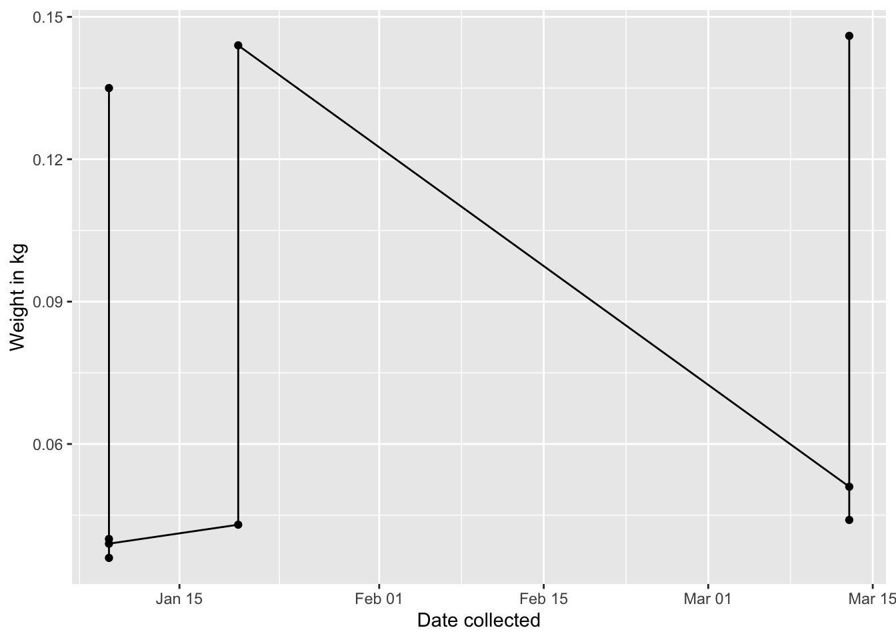

PART II - Instructions
Install the
dplyrpackage, all dependencies, and load the package.For instructions to clean data using tidyverse see here
First you need to load the messy data from here.
It may be helpful to view the data in Excel to understand what it looks like before you import it to R.
Use head(data) in the Console, or data to view your data (where data is the name I gave my data).
head(data)## X X.1 X.2 X.3 X.4 X.5 X.6
## 1 NA
## 2 Data for Site 7 NA
## 3 NA
## 4 Plot: 1 NA Plot: 2
## 5 Date collected Family Genus Species Weight NA Date collected
## 6 01/09/14 Heteromyidae Dipodomys merriami 40 NA 01/08/14
## X.7 X.8 X.9 X.10 X.11 X.12 X.13
## 1 NA
## 2 NA
## 3 NA
## 4 NA Plot: 3
## 5 Family Genus Species Weight NA Date collected Species
## 6 Cricetidae Neotoma albigula -999 NA 1/8 Dipodomys ordii*
## X.14
## 1
## 2
## 3
## 4
## 5 Weight
## 6 42These data are very messy indeed! A helpful command is to know the column names:
colnames(data)## [1] "X" "X.1" "X.2" "X.3" "X.4" "X.5" "X.6" "X.7" "X.8" "X.9"
## [11] "X.10" "X.11" "X.12" "X.13" "X.14"# Extract a row using tidyverse commands
dataX =select(data, "X")
# This is base R syntax to extract specifically rows 6 to 14
date.collected = dataX$X[6:14]
# as.Date() is needed for R to treat this variable as a date
date.collected = as.Date(date.collected, format = "%m/%d/%y")
# This prints to the output, so you can see what I have done
date.collected## [1] "2014-01-09" "2014-01-09" "2014-01-09" "2014-01-09" "2014-01-20"
## [6] "2014-01-20" "2014-03-13" "2014-03-13" "2014-03-13"I will aim to make a data frame with “date collected” and “weight” for Plot 1. Inspecting the data, weight is "X.4" for Plot 1.
weight = select(data, "X.4")
# as.numeric() is needed because otherwise R doesn't recognize these data as numbers - which I need for the multiplication later
weight = as.numeric(weight$X.4[6:14])
# Make this into a data frame so I can plot using ggplot
cleaned.data = data.frame(date.collected, weight)
# add a column that is a mutated column
cleaned.data = mutate(cleaned.data,weight.kg = weight/1000)
# print the cleaned data so we can see what it looks like
cleaned.data## date.collected weight weight.kg
## 1 2014-01-09 40 0.040
## 2 2014-01-09 36 0.036
## 3 2014-01-09 135 0.135
## 4 2014-01-09 39 0.039
## 5 2014-01-20 43 0.043
## 6 2014-01-20 144 0.144
## 7 2014-03-13 51 0.051
## 8 2014-03-13 44 0.044
## 9 2014-03-13 146 0.146Now the data is in a format that I can make a plot:
require(ggplot2)
g1=ggplot(data = cleaned.data, aes(x = date.collected, y = weight.kg)) +
geom_point() +
geom_line() +
xlab("Date collected")+
ylab("Weight in kg")
g1